玻璃隔出層次，石材壓住重心，威士忌牆是整個空間的錨點。
Glass creates layers, stone holds the center of gravity, and the whisky wall anchors the entire space.

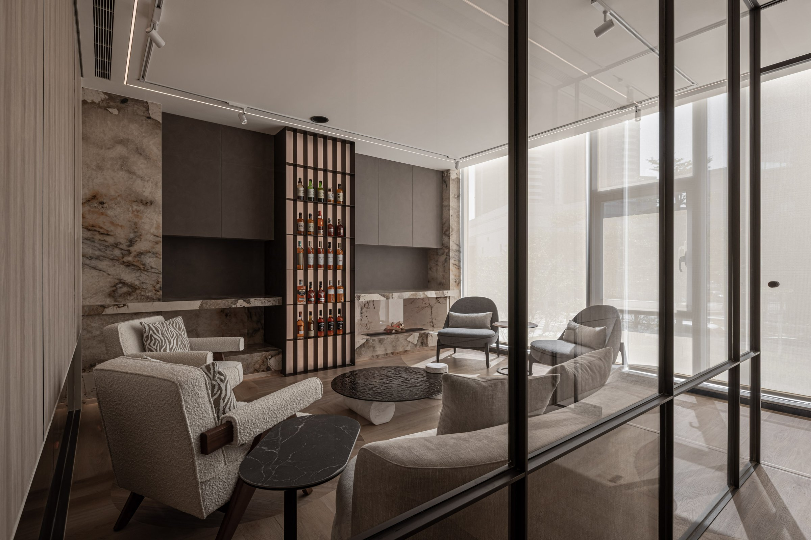
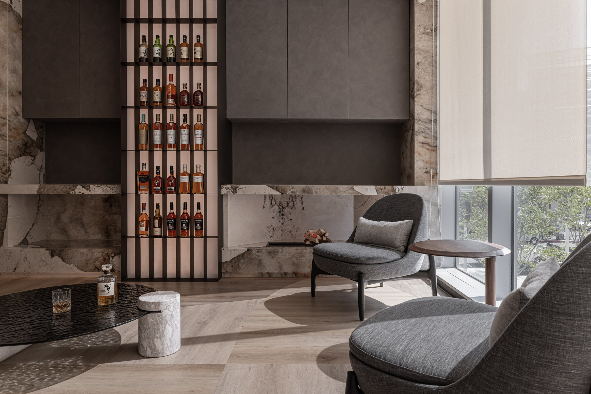
01
入口的紅橘色玻璃隔屏，不是裝飾，是情緒的轉場。從街道走進來，視線先被一層暖色過濾，身體的節奏在這裡被放慢。透過玻璃看見的室內，帶著一層琥珀色的濾鏡——還沒坐下，氣氛已經開始了。
The red-orange glass partition at the entrance is not decoration — it is an emotional transition. Walking in from the street, the eye is filtered through warm color, the body's pace slows. The interior seen through the glass carries an amber cast — the atmosphere begins before you sit.
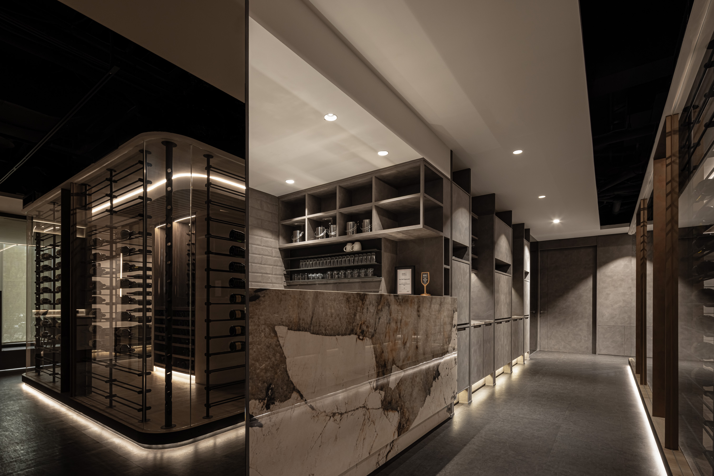
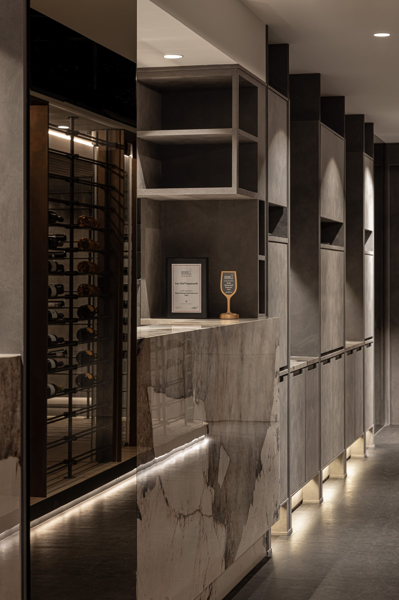
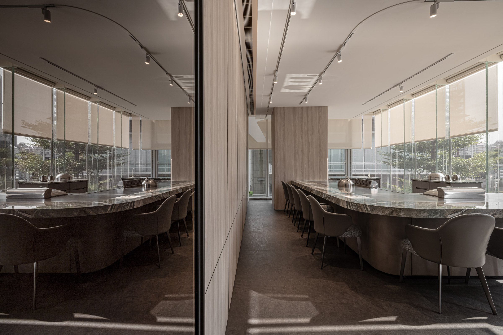
02
威士忌展示牆以黑色鐵件格柵構成，背光均勻打亮每一支酒瓶。展示不是炫耀收藏量，而是讓每一支酒在架上有自己的位置和光線。格柵的節奏感讓牆面從陳列變成空間的立面語言。
The whisky display wall is structured in black steel grille, backlit to illuminate each bottle evenly. Display is not about showing volume — it is about giving every bottle its own position and light. The grille's rhythm turns the wall from a shelf into the space's facade language.
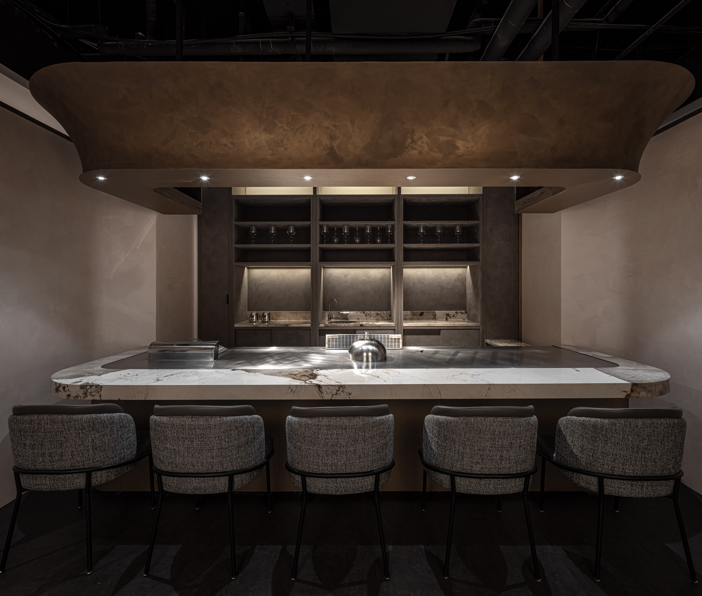
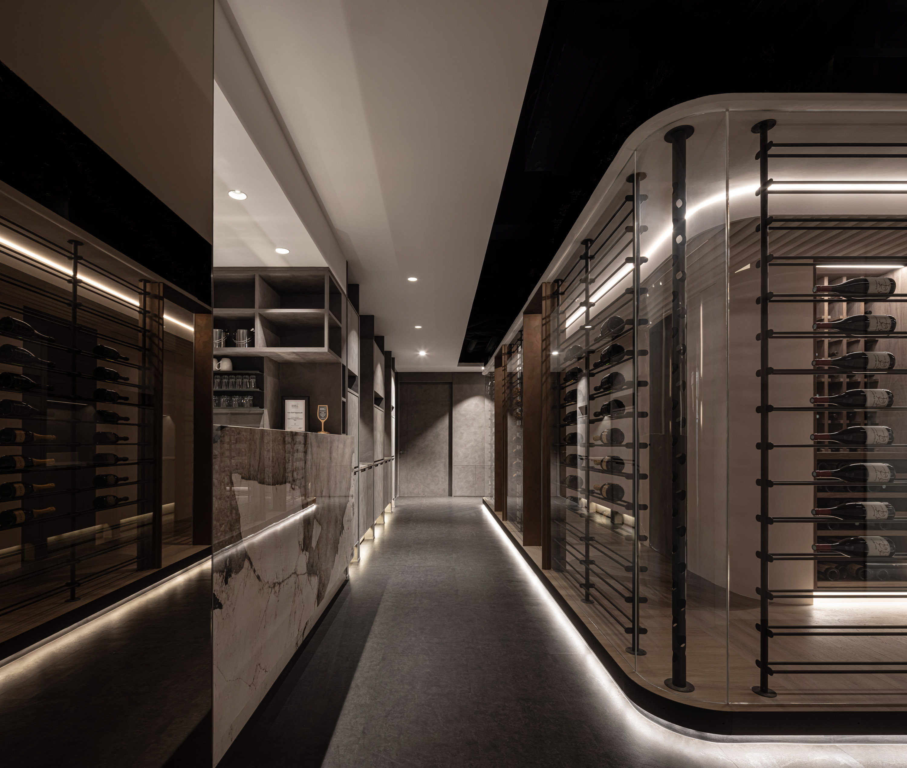
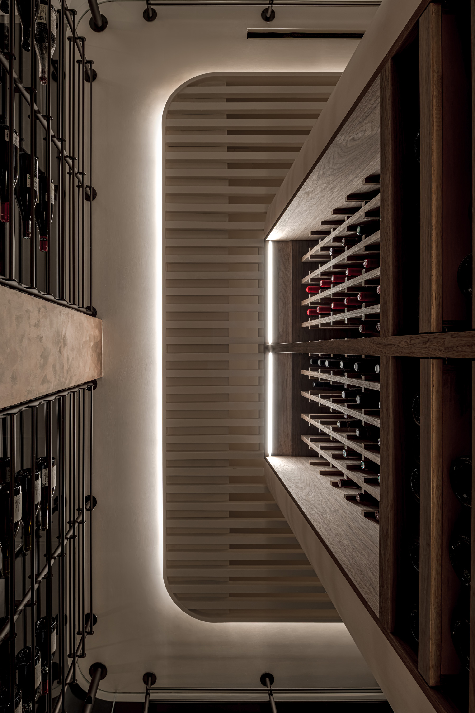
03
大理石與深色皮革定義了休息區的重量感。石材選用帶紋路的天然石，不拋光處理，讓表面保留觸覺的溫度。座椅的間距經過計算——足夠私密，但不封閉，讓對話可以發生，也可以不發生。
Marble and dark leather define the lounge's sense of weight. Natural veined stone, unpolished, retains warmth to the touch. Seat spacing is calculated — private enough, but not enclosed, allowing conversation to happen or not.
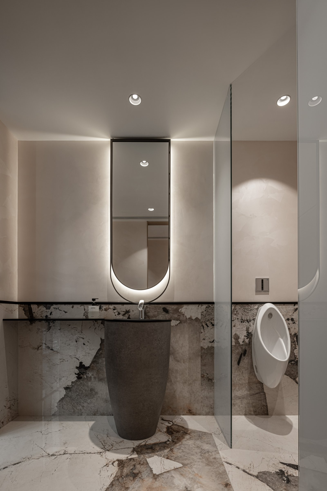
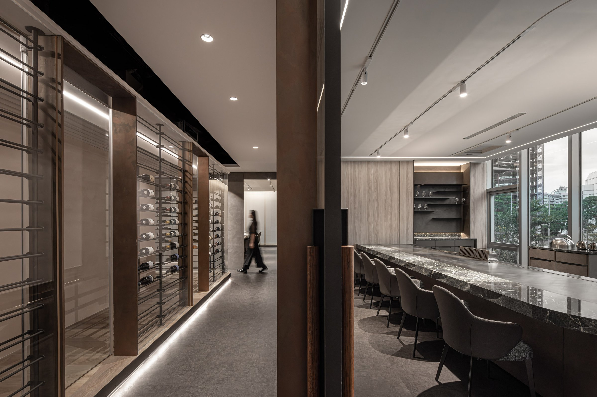
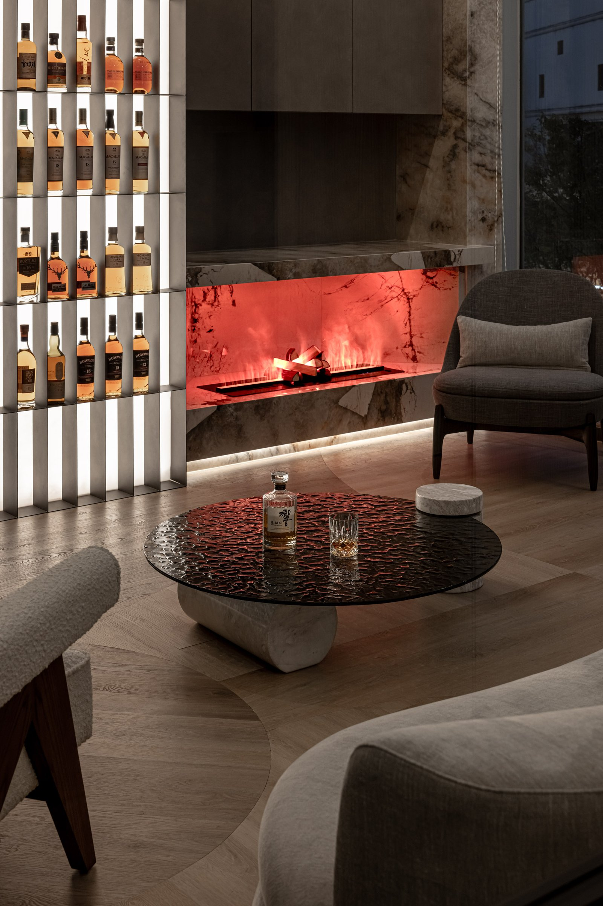
04
山水意象的藝術作品被嵌入玻璃隔間的視線軸上，成為空間的視覺終點。它不是附加的裝飾，而是動線的句點——當你走完這個空間，最後看見的是一幅安靜的風景，讓整個體驗的情緒在這裡收束。
The landscape artwork is embedded along the glass partition's sight axis, becoming the visual terminus. It is not added decoration but the period at the end of circulation — when you finish the space, the last thing you see is a quiet landscape, gathering the experience's emotion to a close.
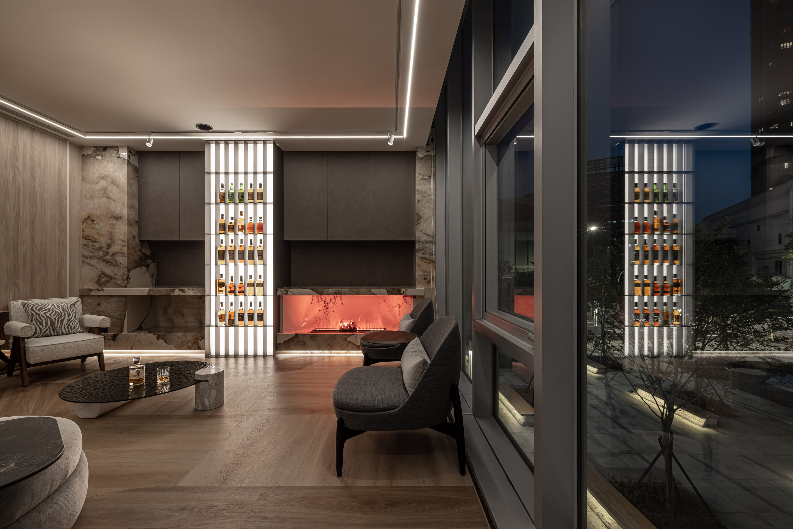
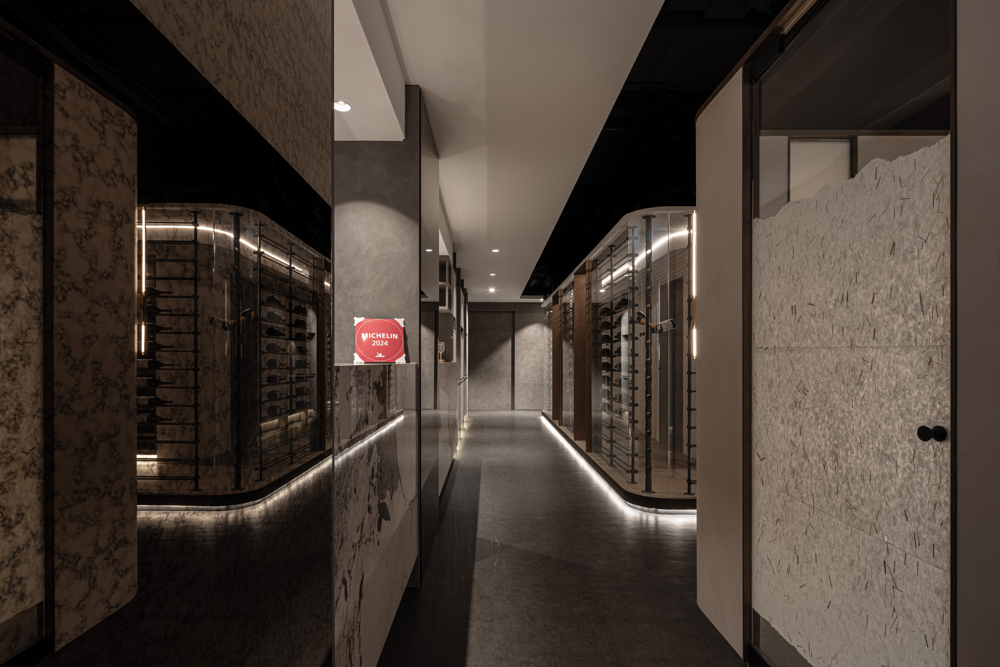
05
這個空間要做到的，是讓商務與放鬆同時成立。玻璃隔間讓視線穿透，但聲音被控制在各自的區域裡。你可以在吧台獨飲，也可以在沙發區談事情——兩種狀態在同一個空間裡不互相干擾。這不是複合空間，是同一個空間的兩種閱讀方式。
The space achieves business and relaxation simultaneously. Glass partitions let sight pass through while sound is contained in each zone. You can drink alone at the bar or discuss business in the lounge — two states coexisting without interference. Not a hybrid space, but one space with two ways of reading.
All Photos